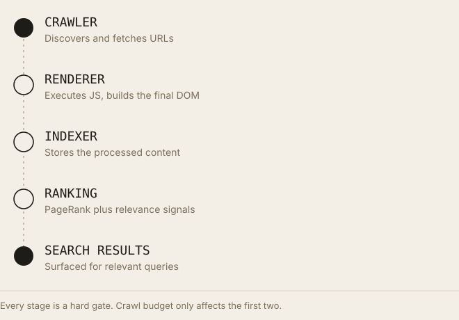
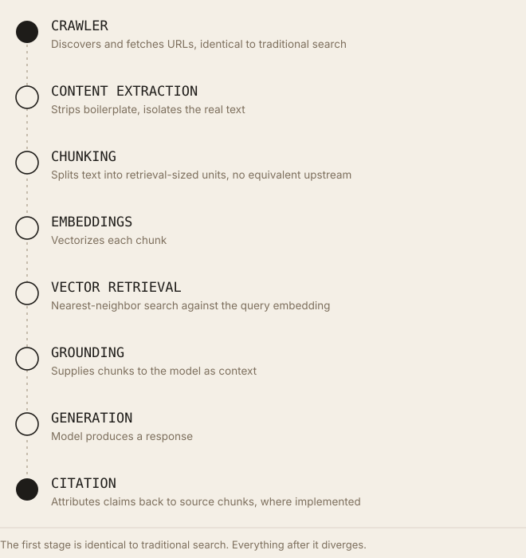

Crawl Budget vs Retrieval Readiness: What Changes in the Age of AI Agents
Traditional crawl-budget thinking doesn't disappear when the visitor is a retrieval agent. It becomes the first of two sequential gates, not the only one.
Executive Summary
Crawl budget is a real, documented constraint: Google's own crawling infrastructure documentation defines it as the product of crawl capacity (what a server can handle) and crawl demand (how much Google wants to revisit a given URL), and states plainly that most small and medium sites never need to think about it. AI retrieval introduces a second, largely separate concern, once a page has been fetched, does its structure let a system chunk it, embed it, and ground an answer in it correctly? These are sequential problems, not competing ones: a page with perfect chunk boundaries and flawless entity clarity is retrieval-inert if no crawler ever reaches it. Cloudflare's 2025 to 2026 traffic data shows AI crawlers now account for roughly a quarter to a third of verified bot traffic on its network, with wildly different crawl-to-referral economics than Googlebot. This article separates what's documented about each concern, states where they overlap, and is explicit about where evidence currently runs out.
Introduction
Crawl budget became a major SEO topic because Google formalized it as a named, documented concept in January 2017, giving technical SEOs a concrete lever to point to on large sites where indexing delays were a real, measurable problem, enterprise catalogs with millions of URLs, news publishers pushing thousands of pages a day, sites where Googlebot's finite capacity genuinely couldn't keep pace with content volume.
AI retrieval systems, the pipelines behind RAG-based chat products and AI-powered search, introduced a second pipeline that a page's content has to pass through after crawling: chunking, embedding, and grounding. Because that second pipeline gets most of the current attention, a common and incorrect inference has followed: that crawling itself is now a solved, secondary problem, since "AI doesn't rank pages the old way." This gets the relationship backwards. Chunking, embedding, and grounding are downstream of a successful fetch. A page an AI crawler never retrieves cannot be chunked, embedded, or cited, regardless of how well-structured its content is. This article works through both pipelines explicitly, states where they diverge, and is precise about which claims are documented fact versus reasonable inference.
What Is Crawl Budget?
Google's crawling infrastructure documentation defines crawl budget as the resources, time, HTTP requests, bandwidth, that Googlebot allocates to a given site within a period, treating each unique hostname as a separate site with its own budget. The documentation states the effective budget is the minimum of two independent factors:
- Crawl capacity limit, the maximum rate Googlebot can fetch from a site without degrading real-user experience, adjusted automatically based on server response time; a server responding in 200ms supports a higher crawl rate than one responding in 1,500ms.
- Crawl demand, how much Google wants to crawl a given URL, driven by two sub-factors the documentation names explicitly: popularity (roughly proxied by inbound-link-derived signals) and staleness (how frequently Google's systems want to recrawl a URL to catch changes).
The pipeline this feeds into, stated in Google's own documentation and consistent across its guidance, runs: discovery (finding a URL exists, via links, sitemaps, or other signals) → crawling (fetching the URL) → rendering (executing JavaScript where needed to see the final DOM) → indexing (storing a processed version) → ranking (surfacing it for relevant queries). Crawl budget affects only the first two steps of that chain, a page can be discovered and never crawled if demand or capacity runs out, but a page that is crawled still has to clear rendering and indexing before ranking is even possible.
Canonicalization matters to this budget directly: duplicate or near-duplicate URLs (parameter variations, session IDs, printer-friendly versions) consume crawl capacity without adding unique content, and Google's own guidance recommends consolidating these via canonical tags or redirects rather than relying on noindex to "save" budget, the documentation is explicit that a page Google crawls and then noindexs has already spent the same crawl cost as one it fully indexes.
Which sites actually need to optimize this: Google's documentation states this directly, if a site doesn't have a large number of rapidly changing pages, or if pages tend to get crawled the same day they're published, crawl budget management isn't a relevant concern; keeping a sitemap current and monitoring the Page Indexing report is sufficient. Independent analysis of Google's guidance places the threshold roughly at sites exceeding a million unique pages that update at least weekly, though Google's own documentation doesn't state a specific numeric cutoff, it defines the condition (rapid change at scale, or observed indexing delay) rather than a hard page count.
How Traditional Search Works
Each stage in this pipeline is a hard gate: a page that fails rendering (JavaScript that never resolves, content hidden behind interaction) may index with incomplete content or not at all; a page that indexes but carries weak relevance and authority signals may never surface in ranking regardless of how well it was crawled. Crawl budget determines only whether a page enters this pipeline at all, and how promptly, it says nothing about what happens once a page is inside it.

Crawl budget governs entry into this pipeline. It says nothing about what happens once inside it.How AI Retrieval Works
The first stage is identical to traditional search: something still has to crawl the page. Everything after that diverges.
Content extraction strips navigation, ads, and boilerplate, the same problem Jeremy Howard's llms.txt proposal identified explicitly as difficult and imprecise for HTML specifically. Chunking splits extracted text into retrieval-sized units, typically paragraph- or section-scale; this step has no equivalent in the traditional pipeline, which ranks whole pages, not spans within them. Embeddings convert each chunk into a vector via a model such as those in the Sentence-BERT family. Vector retrieval finds the chunks nearest a query's embedding using approximate-nearest-neighbor structures (implemented in systems like FAISS, Pinecone, Weaviate, and Milvus). Grounding supplies retrieved chunks to a generation model as context. Citation, where implemented, tracks which chunk supported which claim in the output.

The first stage is identical to traditional search. Everything after it is genuinely new.Crawl Budget vs. Retrieval Readiness
| Dimension | Crawl Budget (Traditional) | Retrieval Readiness (AI) |
|---|---|---|
| What it governs | Whether and how promptly a URL gets fetched at all | Whether fetched content can be usefully chunked, embedded, and grounded |
| Primary constraint | Server capacity × Google's crawl demand | Content structure, boilerplate ratio, chunk-boundary quality |
| Unit of concern | Whole URL | Sub-page span (chunk) |
| Crawl frequency | Directly modeled (staleness factor) | Not a retrieval-readiness concept, a chunk's quality doesn't depend on how often its source page is recrawled, only on the extraction/chunking process applied |
| Indexing | A discrete pipeline stage (store processed page) | No single equivalent, embeddings plus vector index serve an analogous storage role but for chunks, not pages |
| Rendering | A hard gate, unrendered JS content may never index | Equally a hard gate for AI crawlers, most of which have limited or no JavaScript execution (documented for GPTBot and ClaudeBot's stated behavior; neither publishes a rendering engine comparable to Googlebot's) |
| Chunk quality | Not applicable, traditional ranking doesn't chunk | Central, poor chunk boundaries (cutting mid-sentence, mixing topics) directly degrade retrieval, per chunking-strategy research |
| Semantic retrieval | Not applicable, BM25/PageRank-era ranking is lexical and link-based | Central, dense retrieval depends entirely on embedding quality |
| Entity extraction | Not a documented factor in crawl scheduling | A documented input to disambiguation and grounding quality in retrieval pipelines generally |
| Knowledge graphs | Not connected to crawl budget mechanics | Used for grounding and disambiguation, independent of crawl frequency |
| Embeddings | Not applicable | The core representation AI retrieval depends on |
| Grounding | Not applicable, no generation step in traditional search | The step where retrieved chunks become model input |
| Citation | Not applicable in the traditional pipeline (ranking, not attribution) | A distinct downstream step, present in some but not all AI systems |
The load-bearing point: these are not alternative ways of measuring the same thing. Crawl budget is a gate at the entrance of the pipeline. Retrieval readiness describes what happens to content that has already passed through that gate. A page can have excellent retrieval readiness and never be crawled at all, in which case retrieval readiness is irrelevant, the content is invisible to the system regardless of internal structure.
Why Retrieval Readiness Is Becoming Critical
Once a page is reliably crawled, several structural properties measurably affect what happens next in an AI pipeline, each grounded in documented mechanics rather than the crawl-scheduling factors above:
- Clear headings, headings that name the concept they introduce give a chunker a natural, semantically meaningful split point, rather than forcing arbitrary fixed-length splits that can cut mid-thought.
- Logical chunking boundaries, research on RAG chunking strategies consistently finds that chunk size and boundary placement measurably affect retrieval quality, with no single universal correct size, optimal size varies by query type and corpus, and recent work (AI21, 2026) shows the best-performing chunk size varies even within a single corpus depending on the specific query. Anthropic's own published "contextual retrieval" technique addresses this directly by prepending short, chunk-specific context to each chunk before embedding, specifically to reduce the information loss that occurs when a chunk is read in isolation from its surrounding document.
- Entity clarity, disambiguated, explicitly named entities reduce the inferential burden on both the chunking/extraction step and the embedding model, a mechanism discussed in detail in entity-resolution research generally.
- Internal linking, still primarily a crawl-discovery mechanism (helping crawlers find pages at all) rather than a retrieval-readiness one; its effect on chunking or embedding quality specifically is not documented.
- Structured data, where a platform is confirmed to parse it (Google's AI Overviews/AI Mode, per Google's own statements), reduces entity and content-type ambiguity at the extraction stage; unconfirmed for other AI platforms.
- Author information, supplies an explicit, attributable entity that grounding and citation steps can reference, where a system tracks provenance.
- Fresh content, matters differently across the two pipelines: for crawl budget, freshness (staleness) is a documented factor in how often Google recrawls a URL; for retrieval readiness, freshness affects whether an embedded chunk reflects current information, a separate question from crawl scheduling.
- Machine-readable pages, pages that render fully without requiring interaction produce cleaner extraction; the same rendering gate that affects traditional indexing affects AI content extraction, since a crawler that can't execute the JavaScript can't extract text that only appears after it runs.
Why these influence downstream retrieval, stated precisely: each of these properties reduces the amount of inference a downstream system (chunker, embedding model, or generation model) has to perform to correctly interpret the content, the same underlying mechanism as entity clarity's effect on retrieval, applied to structural and provenance signals rather than just terminology.
Does Crawl Budget Still Matter?
Stated per site category, distinguishing Google's documented guidance from reasonable extrapolation to AI crawlers specifically, where AI crawler behavior isn't separately documented:
- Small websites (a few hundred to a few thousand pages, infrequent updates), Google's documentation states crawl budget management isn't a relevant concern here. No evidence suggests AI crawlers behave differently at this scale, though this is inference, not a documented AI-crawler-specific statement.
- Medium websites (thousands to tens of thousands of pages), generally still below the threshold where Google's guidance considers crawl budget management necessary, provided update frequency isn't extreme and indexing delays aren't already observed.
- Large enterprise websites (hundreds of thousands to millions of pages), this is where Google's crawl budget documentation explicitly applies; duplicate URL consolidation, canonicalization, and reducing crawl waste become directly relevant to whether new or updated pages get indexed promptly.
- News websites, high crawl demand from staleness (frequent updates) and often from popularity; Google's documentation and Search Console's Crawl Stats report are directly relevant here.
- E-commerce, frequently combines large URL counts (faceted navigation, parameter-based filtering) with high duplicate-content risk, a well-documented crawl-budget failure mode Google's guidance addresses specifically (recommending consolidation via canonicalization rather than blanket
noindex). - Forums, often generate enormous URL counts through pagination and sorting parameters; a documented pattern of crawl waste if unmanaged.
- Documentation websites, typically well below the scale threshold for crawl budget concerns, but the primary confirmed use case for llms.txt-style AI-crawler tooling (coding agents, RAG pipelines built to fetch curated summaries) makes retrieval readiness disproportionately relevant here relative to their size.
- Government websites, scale varies enormously; large multi-agency sites with millions of archived pages can hit genuine crawl-budget constraints, while smaller municipal sites typically don't.
On AI-crawler-specific budget behavior: Cloudflare's traffic data shows AI crawlers now represent a substantial and growing share of verified bot traffic, approximately 20% for AI crawlers plus roughly 6 to 7% for AI-search bots in mid-2026 data, with combined AI-related traffic exceeding traditional search-engine crawler traffic in some measurement windows. Crucially, Cloudflare's data also shows AI crawlers operate on radically different economics than Googlebot: Anthropic's ClaudeBot has been measured at crawl-to-referral ratios in the tens of thousands to one in some industry verticals (meaning it crawls many thousands of pages for every one referral sent back to a site), compared to Google's roughly 5:1 ratio in the same analysis. Whether individual AI crawlers apply anything analogous to Google's crawl capacity/demand model is not publicly documented by OpenAI or Anthropic, this article states that gap explicitly rather than assuming parity with Googlebot's documented behavior.
Common Misconceptions
- "Crawl budget is dead." Incorrect. Google's crawl budget documentation remains current and unrevised in its core mechanics; large, frequently updated sites still face the same discovery-to-crawl bottleneck it describes, independent of anything happening in AI retrieval.
- "AI doesn't crawl websites." Incorrect. Cloudflare's data documents sustained, high-volume crawling from GPTBot, ClaudeBot, and other named AI crawlers, AI retrieval, whatever else it changes, still begins with a crawl.
- "Only embeddings matter." Incorrect. Embeddings operate on content that must first be crawled, extracted, and chunked; a flawless embedding of unreachable content is not possible, because unreachable content is never embedded.
- "Indexing is obsolete." Incorrect for traditional search, indexing remains a documented, necessary stage before ranking. For AI retrieval, "indexing" in the vector sense (storing chunk embeddings) is arguably more central than ever, not less; the term applies differently across pipelines but isn't absent from either.
- "Robots.txt no longer matters." Incorrect. OpenAI's crawler documentation explicitly states GPTBot and its other crawlers are controlled via robots.txt; Anthropic's ClaudeBot likewise respects robots.txt per widely observed behavior. Blocking or allowing these crawlers via robots.txt remains a functioning, documented control mechanism.
Practical GEO Checklist
- Confirm your site's scale actually warrants crawl-budget attention, check Search Console's Page Indexing report for observed delays before assuming a problem exists.
- Consolidate duplicate URLs (parameters, session IDs, filtered/sorted views) via canonical tags or redirects rather than relying on
noindex. - Use robots.txt to block crawling of genuinely low-value URL patterns (infinite scroll endpoints, internal search results, admin paths).
- Return correct HTTP status codes (404/410) for permanently removed content, rather than soft-404s that waste crawl attempts.
- Keep XML sitemaps current and limited to canonical, indexable URLs.
- Ensure mobile and desktop versions expose the same link set, or that all desktop links are represented in the sitemap, a specific, documented Google recommendation.
- Reduce server response time where feasible; Google's crawl capacity limit is directly, automatically responsive to it.
- Audit and reduce crawl waste from faceted navigation and pagination on e-commerce and forum-style sites specifically.
- Explicitly allow or disallow named AI crawlers (GPTBot, ClaudeBot, PerplexityBot, and others) in robots.txt based on a deliberate decision, not by default inaction.
- Ensure critical content renders without requiring user interaction, both traditional indexing and AI content extraction depend on a full, non-interactive render.
- Write headings that name the concept or entity they introduce, giving chunkers a natural, meaningful split point.
- Avoid burying a direct answer inside a long, undifferentiated block of prose, retrieval and chunking both benefit from discrete, addressable sections.
- Keep one core topic per section; mixed-topic sections force chunkers into an imprecise choice between splitting mid-thought or retrieving irrelevant adjacent content.
- Use explicit entity naming (full names, not pronouns) across section boundaries, since chunks are often retrieved and read in isolation from the rest of the document.
- Add structured data where you've confirmed a specific platform uses it (Google's AI Overviews/AI Mode, Bing), rather than assuming universal benefit.
- Include author and publication-date information as machine-parseable metadata, supporting provenance where citation tracking exists downstream.
- Maintain clean internal linking as a discovery mechanism, its primary documented value remains helping crawlers find pages, not improving embedding quality.
- Monitor Search Console's Crawl Stats report and server logs for AI-crawler-specific request patterns, since this data is not surfaced identically to traditional crawl-budget tooling.
- Don't assume AI crawlers render JavaScript the way Googlebot does; verify via server logs whether AI-crawler requests are hitting server-rendered or client-rendered content.
- Treat crawl accessibility and retrieval readiness as sequential audits, not a single combined checklist item, fix crawl-level blockers first, since no amount of chunk-boundary optimization compensates for a page that's never fetched.
Future Outlook
Agentic search and Retrieval-Augmented Generation. As AI products increasingly retrieve live, per-query rather than relying solely on pre-trained knowledge, the crawl-to-retrieval pipeline described in this article becomes the operative path for an increasing share of AI-sourced answers, a trend documented in Cloudflare's data showing rising AI-crawler volume, though the precise long-term mix of training-time versus query-time retrieval isn't something any single source has published a definitive forecast for.
Persistent AI indexes. Whether AI platforms will build and maintain something functionally equivalent to a traditional search index, rather than relying on live, per-query crawling or on knowledge baked in during training, is not something OpenAI, Anthropic, or other major labs have described in published architecture detail. Cloudflare's data distinguishing "training" crawl purpose (a documented majority of current AI crawl volume) from "live search" crawl purpose suggests the two models currently coexist, with training still dominant by volume as of mid-2026 measurements.
Knowledge graphs. Continued use of structured, entity-linked knowledge (Google's Knowledge Graph, Wikidata) alongside vector retrieval is an observed architectural pattern in production systems generally, though the specific weighting between graph-based and embedding-based retrieval in any particular AI product isn't publicly documented in comparable detail across vendors.
Model Context Protocol (MCP). Anthropic's MCP, introduced November 2024, addresses a different layer than either crawling or chunking, it standardizes how an AI application connects to external tools and data sources at runtime, rather than describing how static web content gets crawled or chunked. It's a plausible complement to both pipelines (an agent could use MCP to query a live database instead of retrieving a crawled, chunked, embedded version of the same information) but shouldn't be conflated with either crawl budget or retrieval readiness, it solves the "how does an agent access structured systems" problem, not the "how does an agent read the web" problem this article focuses on.
How crawling and retrieval likely evolve together, not as a replacement: every documented AI retrieval pipeline examined in this article begins with a crawl. No evidence, from Google, OpenAI, Anthropic, or Cloudflare's traffic measurements, supports a trajectory where crawling becomes unnecessary; the more defensible reading of the evidence is that crawling remains the gating first step, while the value distribution across the rest of the pipeline (chunking, embedding, grounding) has grown as a proportion of what determines final content usefulness, precisely because more of that pipeline now exists at all.
Key Takeaways
- Google's crawl budget documentation defines it as the minimum of crawl capacity (server-driven) and crawl demand (popularity plus staleness); this definition is unchanged by AI retrieval's existence.
- Crawl budget governs whether and how promptly a page is fetched; retrieval readiness governs what happens to a page's content after it's already been fetched, these are sequential, not competing, concerns.
- Most small and medium sites don't need crawl-budget optimization, per Google's own stated guidance; this remains true regardless of AI retrieval considerations.
- Large, high-URL-count, or rapidly updating sites (enterprise catalogs, news, e-commerce, forums) are where Google's documentation says crawl budget management is genuinely necessary.
- AI crawlers (GPTBot, ClaudeBot, and others) are documented, high-volume, real crawlers per Cloudflare's traffic data, "AI doesn't crawl" is factually incorrect.
- AI-crawler economics differ sharply from Googlebot's: Cloudflare data shows crawl-to-referral ratios for some AI crawlers in the thousands-to-one range, versus roughly 5:1 for Google in the same analysis.
- Chunking, embedding, and grounding have no equivalent in traditional search's crawl-render-index-rank pipeline; they are genuinely new stages, not renamed old ones.
- Chunking-strategy research finds no universal optimal chunk size, it varies by corpus and query type, and recent work shows it can vary even within a single corpus depending on the specific query asked.
- Robots.txt remains a documented, functioning control mechanism for AI crawlers, OpenAI's official documentation states GPTBot is controlled via robots.txt directives.
- No primary source, Google, OpenAI, Anthropic, or independent traffic data, supports the claim that crawling has become unnecessary; the evidence supports crawling as an unchanged first gate, with a genuinely new, additional pipeline now sitting downstream of it.
Glossary
- Crawl budget
- The combined effect of crawl capacity and crawl demand determining how many pages Googlebot fetches from a site in a given period.
- Crawl capacity limit
- The maximum crawl rate a server can sustain without degrading real-user experience, adjusted automatically by Google based on server response time.
- Crawl demand
- How much a search engine wants to crawl a given URL, driven by popularity and staleness.
- Rendering
- Executing a page's JavaScript to produce its final DOM before indexing.
- Canonicalization
- Consolidating duplicate or near-duplicate URLs into a single authoritative version.
- Chunking
- Splitting extracted content into retrieval-sized spans (typically paragraph- or section-scale) prior to embedding.
- Embedding
- A vector representation of text positioned so that semantic similarity corresponds to geometric closeness.
- Vector retrieval
- Finding the nearest chunks to a query embedding via approximate-nearest-neighbor search.
- Grounding
- Supplying retrieved chunks to a generation model as context for its response.
- Crawl-to-referral ratio
- The number of pages an AI crawler fetches per referral (click-back) it sends to the source site, used by Cloudflare's analysis to characterize different platforms' crawling economics.
- Model Context Protocol (MCP)
- Anthropic's open standard for connecting AI applications to external tools and data sources at runtime, distinct from web crawling or content chunking.
FAQ
Do I need to worry about crawl budget if I'm optimizing for AI retrieval?
Only if your site already meets the scale/update-frequency threshold where Google's documentation says crawl budget matters. Retrieval readiness doesn't change that threshold, it's a separate, downstream concern.
Does blocking GPTBot or ClaudeBot in robots.txt affect my Google Search rankings?
No documented mechanism connects AI-crawler robots.txt directives to Google Search ranking; they are separate, independently controllable crawlers per OpenAI's own crawler documentation.
Is chunk-boundary optimization worth the effort for a small site?
If your site is small enough that crawl budget isn't a concern per Google's guidance, and your content is being crawled reliably by whichever systems you care about, chunking-strategy improvements are a reasonable, evidence-backed lever, but they only matter once the crawling step is already working.
Will AI crawlers eventually behave like Googlebot, with a documented capacity/demand model?
Unknown. Neither OpenAI nor Anthropic has published crawl-scheduling documentation comparable to Google's; this is a gap in available evidence, not a settled question either way.
References
- Google for Developers, "Crawl Budget Management," Google Crawling Infrastructure documentation, developers.google.com/crawling/docs/crawl-budget
- Google Search Central Blog, coverage of crawl budget best-practices updates (mobile/desktop link parity), November 2024
- OpenAI, "Overview of OpenAI Crawlers," developers.openai.com/api/docs/bots
- Cloudflare Blog, "From Googlebot to GPTBot: Who's crawling your site in 2025," July 1, 2025
- Cloudflare Blog, "A deeper look at AI crawlers: breaking down traffic by purpose and industry," August 28, 2025
- Cloudflare Radar, AI bots summary and crawl-purpose data, 2026
- Answer.AI, "/llms.txt, a proposal to provide information to help LLMs use websites," September 3, 2024 (cited for the HTML-extraction-difficulty problem statement)
- Anthropic Engineering, "Introducing Contextual Retrieval" (chunk-context-prepending technique for RAG)
- AI21, "Chunk size is query-dependent: a simple multi-scale approach to RAG retrieval," 2026
- Reimers, N., and Gurevych, I., "Sentence-BERT: Sentence Embeddings using Siamese BERT-Networks," EMNLP-IJCNLP 2019 (ACL Anthology)